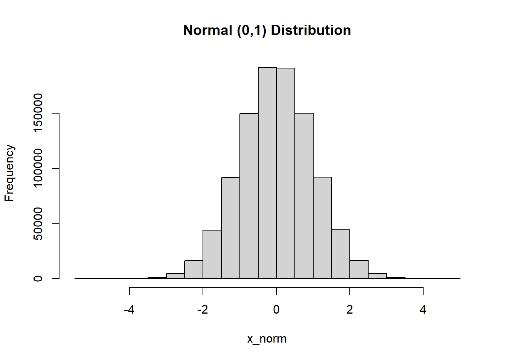
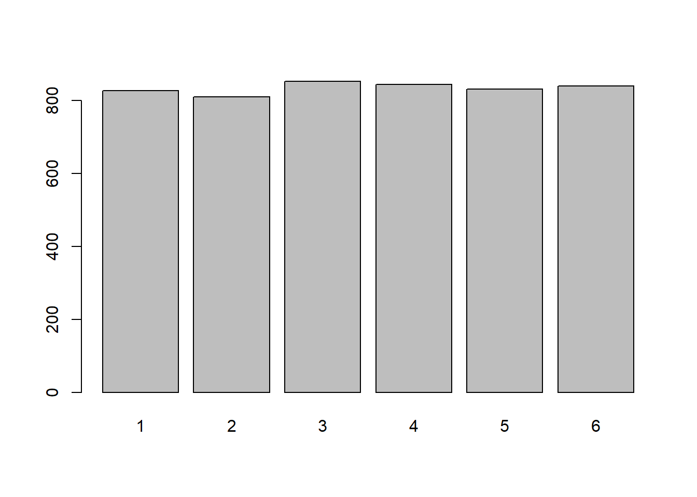
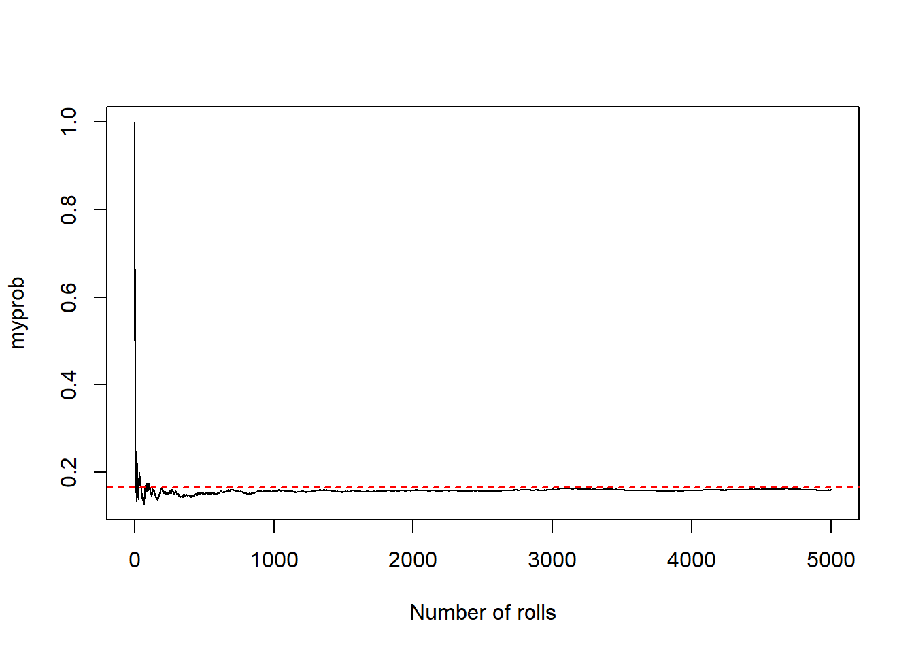

16 Simulations
In this worksheet, we will:
- Discuss R’s random number generating capabilities.
- Build some common probability distributions.
- Use loops and random number generation to simulate random events.
Because we always come back to tidyverse at some point:
16.1 Generating random numbers
Any software that can produce a “random” process typically relies on a pseudo-random number generator. In R, it is called the Mersenne-Twister, which is considered very good, repeating only once every \(2^{19,937} - 1\) iterations.
16.1.1 Random numbers among some values
We can use this generator to sample from a given list of values:
## [1] 4Did we all get the same thing? Why/Why not?
It’s random!
We can also get a sample of more than 1 value:
## [1] 9 1 6 1 7## [1] 4 7 1 2 8Replace = TRUE can have duplicates.
Note that we can make sure that we all have the same “random sample”. Let’s use set.seed:
## [1] 10 3 7We would have to set the seed each time we want to use a random process.
16.1.2 Random numbers from a probability distribution
You will come across common probability distributions (uniform, normal, etc.) throughout the SDS curriculum. Here are some examples:
## [1] 0.79201043 0.34006235 0.97206250 0.16585548 0.45910367 0.17174808
## [7] 0.23147710 0.77281195 0.09630154 0.45344777What if we sampled many values and plotted these values with a histogram:
# Make a vector of one million values between 0 and 1
x_unif <- runif(n = 1000000, min = 0, max = 1)
hist(x_unif, main = 'Uniform (0,1) Distribution')
Why does it make sense to see what we see?
All values equally likely.
Another common distribution is the normal distribution that is defined by a mean value and a standard deviation with a symmetric shape (bell-shaped).
## [1] 1.2472739 -1.2330278 -0.8378650 0.8116156 0.4344979 0.9063994
## [7] 0.6062468 0.4520080 0.3909159 -0.3648308Representing many values:
# Make a vector of one million values between 0 and 1
x_norm <- rnorm(n = 1000000, mean = 0, sd = 1)
hist(x_norm, main = 'Normal (0,1) Distribution')
You can find all of the probability distributions R can sample from here.
16.1.3 Group practice
Let’s consider the following dataset:
# Upload data from GitHub
pokemon <- read_csv("https://raw.githubusercontent.com/laylaguyot/datasets/main//pokemon.csv")
# Take a look
head(pokemon)In your group, you will:
- Pick one numeric variable (
Total,HP, …, orSpeed). Take a look at the distribution of this variable with a histogram and find the value of the mean and standard deviation.
- Take a sample of 30 values of this variable and find the mean. Do all group members get the same mean? How does this mean compare with the overall mean from above?
- Now, repeat the sampling process 100 times: each time, take a sample of 30 values and find the mean. You should get 100 (different) mean values overall! Represent the distribution of these means with an histogram and find then find the mean (of the means!). How does this mean compare with the overall mean from way above?
- Share both histograms (of the entire variable and of the means) along with the values of the means on your [group’s slide] (https://docs.google.com/presentation/d/1v_0h8w1YspWKaKt5K1CYiewiokwMyjETLVJBTm0AUEw/edit?usp=sharing)
You just demonstrated an important theorem in probability, called the Central Limit Theorem!
16.2 Some applications of simulations
We can use simulations to help us investigate probabilities.
16.2.1 Rolling dice
Let’s start with an intuitive example, like rolling dice:
## [1] 4What was the probability of rolling a 4?
1/6
What if we roll the dice 10 times:
# Roll the dice and check how many times it happened
myrolls <- sample(x = 1:6, size = 10, replace = TRUE)
barplot(table(myrolls))
What appears to be the probability of rolling a 4 given these results?
2/10
What if we roll the dice 5,000 times:
# Roll the dice and check how many times it happened
myrolls <- sample(x = 1:6, size = 5000, replace = TRUE)
barplot(table(myrolls))
## myrolls
## 1 2 3 4 5 6
## 826 809 852 843 831 839## [1] 0.1686What appears to be the probability of rolling a 4 given these results?
800/5000
Let’s keep track of the probability of rolling a 4 as we roll the dice many times (using a loop!):
# Initialize values for rolls and probabilities
myrolls <- c()
myprob <- c()
for (i in 1:5000) {
myrolls[i] <- sample(x = 1:6, size = 1) # roll 1 die
myprob[i] <- sum(myrolls == 4)/i # divide how many times we rolled a 4 by how many times we rolled
}
plot(1:5000, myprob, type = 'l', xlab = "Number of rolls")
abline(h = 1/6, lty = 2, col = 'red')
What do you notice about the probability of rolling a 4 as the number of rolls increases?
Write sentences here.
You just demonstrated an important theorem in probability, called the Law of Large Numbers! It is especially useful when the probability itself is not easy to determine but we could repeat an experiment a large number of times.
16.2.2 Birthday problem
What is the probability that at least 2 people in the room today share the same birthday?
This question does not have an easy answer. But let’s use a simulation to explore:
# Create a vector representing all possible birthdays
birthdays = 1:365
# Pick 40 birthdays (uniformly = with an equal chance and with replacement), at random
mybirthdays <- sample(birthdays, size = 40, replace = TRUE)
# Are there any doubles?
any(table(mybirthdays) > 1) # If TRUE, then at least two students have the same birthday## [1] TRUEDo we just get that result by chance?